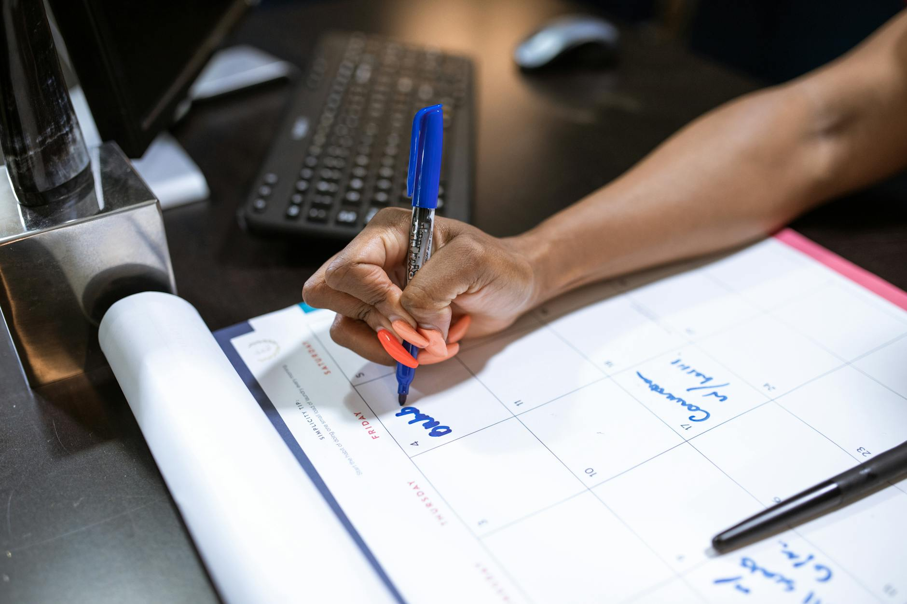

Hányszor határoztad el, hogy mától kezdve teljesen új életet kezdesz? Korán kelsz, napi két órát edzel, egészségesen étkezel, és minden feladatodat időben befejezed. Valószínűleg sokszor. És hányszor sikerült ezt a drasztikus változást egy hétnél tovább fenntartani? Ha a válaszod az, hogy „szinte soha”, ne aggódj: nem vagy egyedül.
Az emberi agy gyűlöli a hirtelen, nagy változásokat. A drasztikus reformok helyett a tartós siker kulcsa a mikroszokásokban rejlik. Ezek olyan apró, szinte észrevehetetlen napi tevékenységek, amelyek elvégzése minimális akaraterőt igényel, mégis, az idő múlásával kamatos kamatként adódnak össze, és teljesen átalakítják a hatékonyságodat.
James Clear, az Atomi szokások című bestseller szerzője szerint, ha minden nap csak 1%-kal leszel jobb valamilyen téren, az év végére 37-szeres fejlődést érhetsz el.
Íme 5 olyan mikroszokás, amelyet mától beépíthetsz az életedbe, és amelyek észrevétlenül fogják megduplázni a napi produktivitásodat.
A halogatás legnagyobb ellenszere nem a vasakarat, hanem az első lépés megtétele. A fizika törvényei az emberi viselkedésre is igazak: egy mozgásban lévő testet sokkal könnyebb mozgásban tartani, mint egy állót elindítani.
Ha egy feladat elvégzése kevesebb mint két percet vesz igénybe, ne halaszd el, hanem csináld meg azonnal. * Válaszolj meg egy rövid e-mailt. * Tedd a helyére a bögrét. * Írd fel a naptáradba a következő találkozót.
Ha a feladat hatalmas és ijesztő (például egy prezentáció megírása), akkor alakítsd át a kétperces verziójára: „Csak megnyitom a PowerPointot, és leírom a címet.” Amint elkezded, az agyad átlendül a holtponton, és sokkal nagyobb valószínűséggel fogod folytatni a munkát.
Mi az első dolog, amit ébredés után teszel? Ha a többséghez tartozol, valószínűleg a telefonod után nyúlsz, e-maileket olvasol, vagy a közösségi médiát görgeted. Ezzel az egyszerű mozdulattal azonnal átadod az irányítást a napod felett másoknak.
Amikor reggel azonnal információáradatnak teszed ki magad, az agyad azonnal reaktív állapotba kerül. Mások problémáira, hírekre és külső ingerekre reagálsz, ahelyett, hogy a saját prioritásaidra fókuszálnál. Emellett a dopamin-szinted korai megugrása miatt a nap hátralévő részében nehezebben fogsz tudni koncentrálni a mély fókuszt igénylő feladatokra.
A mikroszokás: Ébredés után az első 15 percben ne nyúlj a telefonodhoz. Nyújts egyet, igyál meg egy pohár vizet, vagy egyszerűen csak élvezd a kávédat csendben. Ezzel megalapozod a mentális nyugalmat és a fókuszált napindítást.
Új szokásokat kialakítani nehéz, mert az agyunknak új idegpályákat kell kiépítenie hozzá. Azonban van egy trükk: kapcsolj össze egy új, kívánt szokást egy már meglévő, sziklaszilárd napi rutinoddal.
„Miután [Meglévő szokás], megteszem a [Új mikroszokás].”
Nézzünk néhány gyakorlati példát: * „Miután lefőztem a reggeli kávémat, felírom a mai nap 3 legfontosabb feladatát.” * „Miután leültem a gépem elé, bezárom az összes böngészőlapot, ami nem a munkához kapcsolódik.” * „Miután befejeztem a munkaidőt, letörlöm az asztalomat, hogy másnap tiszta lappal induljak.”
Mivel a meglévő szokásod már automatikus, nem kell külön akaraterő ahhoz, hogy emlékeztesd magad az új tevékenységre.
A fizikai környezetünk közvetlen hatással van a mentális állapotunkra. A rendetlen asztal, a szétszórt papírok és a monitorra ragasztott tucatnyi post-it folyamatosan vizuális ingerekkel bombázza az agyad, ami növeli a stresszt és csökkenti a koncentrációt.
Mielőtt felállnál a munkaasztalodtól a nap végén, szánj pontosan egy percet arra, hogy rendet rakj: 1. Dobd ki a felesleges papírokat és rágópapírokat. 2. Tedd a tollakat a tartóba. 3. Csukd be a felesleges böngészőlapokat a gépeden.
Amikor másnap reggel leülsz dolgozni, nem a tegnapi káosz fogad majd, hanem egy tiszta, hívogató munkaterület, ami azonnal produktív hangulatba helyez.
A produktivitás nemcsak arról szól, hogy mennyi mindent csinálsz meg, hanem arról is, hogy a megfelelő dolgokon dolgozol-e. Sokszor rohanunk végig a napon anélkül, hogy megállnánk értékelni a haladásunkat.
A munkanap végén nyiss meg egy füzetet vagy egy jegyzetalkalmazást, és válaszold meg ezt az egyetlen kérdést: * Mi volt a mai napom legnagyobb győzelme?
Ez a mikroszokás mindössze 60 másodpercet vesz igénybe, mégis két hatalmas előnye van. Először is, tudatosítja benned az elért eredményeidet, ami növeli a motivációdat (ez az úgynevezett haladási hatás). Másodszor pedig segít lezárni a munkanapot mentálisan, így az este folyamán képes leszel valóban pihenni és feltöltődni.
A mikroszokások ereje a minimalizmusukban rejlik. Ne próbáld meg mind az ötöt egyszerre bevezetni! Ez ugyanahhoz a kiégéshez vezetne, mint a korábbi, drasztikus fogadalmaid.
Válassz ki egyetlen szimpatikus mikroszokást a fenti listából. Kötelezd el magad mellette a következő egy hétben. Amikor már úgy érzed, hogy ez a mozdulat automatikussá vált, és nem igényel extra erőfeszítést, csak akkor fűzd hozzá a következőt.
Ne feledd: a nagy sikerek nem egyszeri, hősies tettekből állnak, hanem apró, nap mint nap következetesen ismételt döntésekből. Kezdd kicsiben, és arass le hatalmas eredményeket!